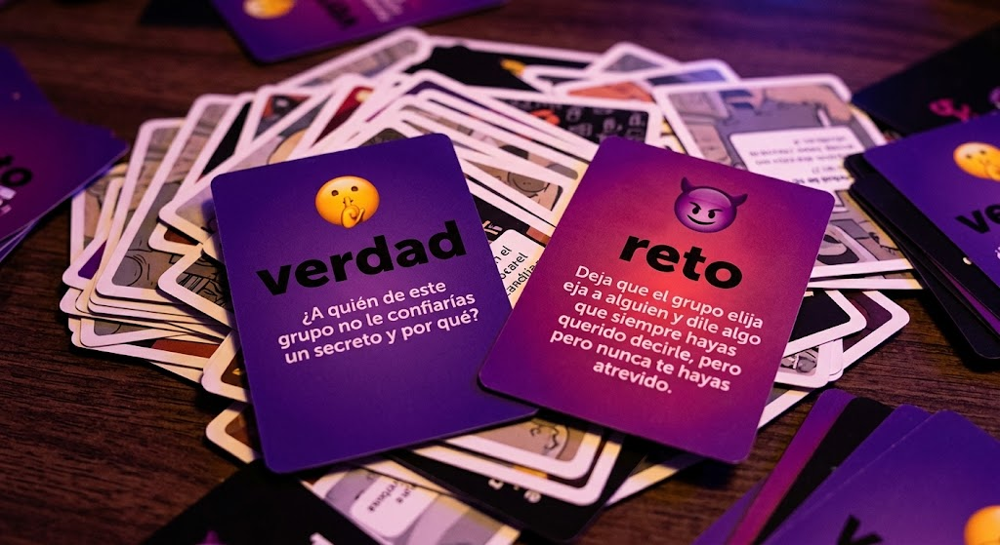
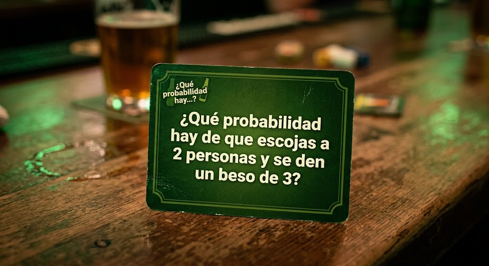
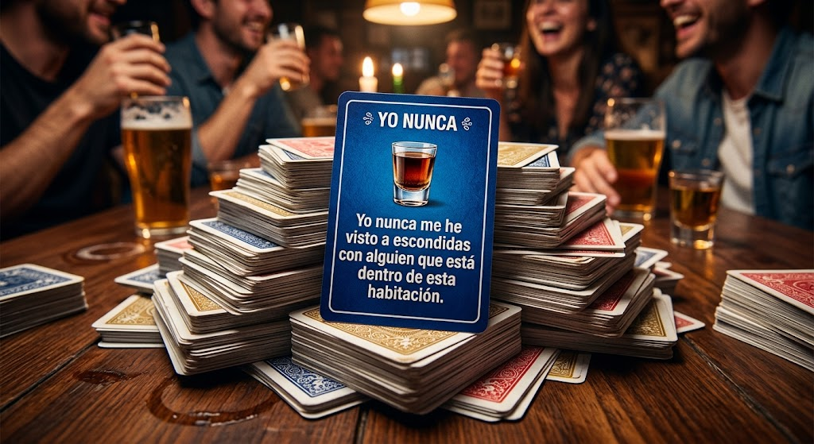
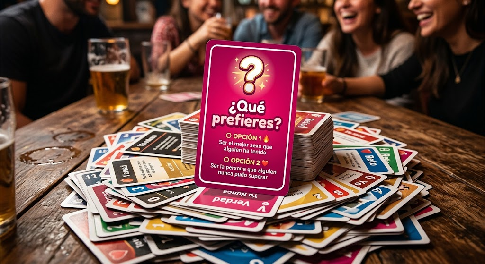

Verdad o Reto 🤫😈
El juego clásico donde debes elegir entre decir la verdad o aceptar un reto comprometedor. Pero olvídate de las preguntas comunes.

🔥 Verdad o Reto
No podemos caer en la monotonía, por eso tenemos varias opciones para disfrutar de una experiencia única.
El juego clásico donde debes elegir entre decir la verdad o aceptar un reto comprometedor. Pero olvídate de las preguntas comunes.

Cuenta hasta tres, di un número y descubre quién se atreve a cumplir el reto. La emoción está en la incertidumbre.

Prepárate para descubrir los secretos más divertidos y tomar un trago si ya has caído en la tentación. ¡La diversión está garantizada!

Decisiones rápidas, incómodas y divertidas entre dos opciones extremas. ¡Prepárate para reír y sorprenderte!
